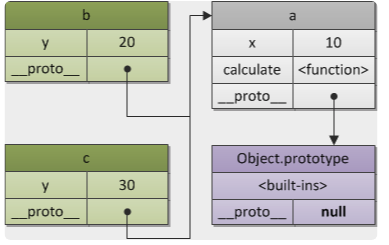
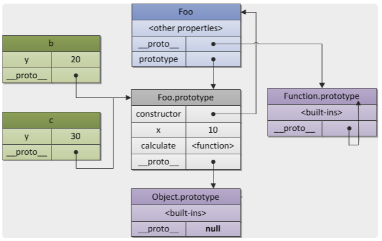
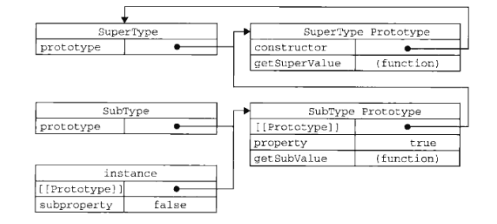

本篇博客主要是想总结一下js中的原型，其中包含《左耳听风》36节之后的一点思考。
原型
在去年刚看JS高程的时候，觉得javascipt这继承真麻烦，并没有去深入思考一下，在看到左耳听风这篇文章后，觉得有了一些新的认识。这里对原型再深入探索一下。

从这个图里，可以很明白表达原型链的含义，在每个对象里都有一个__proto__的属性，用来指向其原型。

这里是对__proto__与prototype差异的一个说明，Foo每个Function对象都会多一个prototype属性，指向一个对象，其他对象的通过__proto__指向Foo.prototype。

这个是JS高程中原型链继承中的图片，很清楚的看出SubType的prototype对象通过__proto__指向SuperType的prototype来继承其中的方法，instance实例通过__proto__来使用subtype中的方法。
思考
这引发了我对两个问题的思考：
为什么要有prototype与
__proto__首先原型链的本质就是通过
__proto__来指向其他对象的方式来复用代码，典型的组合方式。那为什么会用prototype呢，我觉得是原因Function两个维度上的使用，其一直接new对象，其二被子类继承使用。因为需要直接new对象，也就需要__proto__；因为需要被其他子Function继承，所以将被继承、被共用的部分独立出来，放到prototype中，本质上是一种模块化思维，将可以被复用的与不能被复用的分离。js为什么以这种方式来实现继承
js基本属于一切皆对象的语言，函数是对象、类是对象。这样的情况注定没有类型，也就注定只能是组合的方式来完成类。在静态语言中，我们生命一个Student类，然后实例化一个xiaoMing的实例，在这里Student是一个对象，它与xiaoMing本质上是一种东西。xiaoMing通过一个指定的属性依赖Student。
这其实引发另一个问题，这种组合方式是动态类型语言唯一的方式吗？python中好像并不是这样玩的，这个问题留给以后来思考。